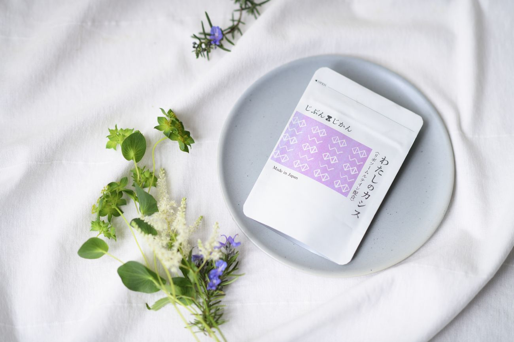
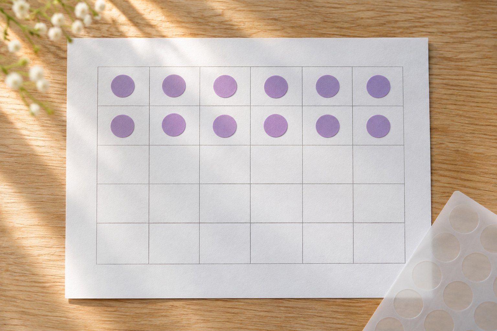

広告です。
自分のための1粒を、
納得して選ぶ。
ルテイン10mg＋カシス由来
アントシアニン50mg。
眼科専門医が処方設計を監修した、
1日1粒のサプリ「わたしのカシス」。
定期購入｜初回1袋（30粒）
1,980円（税込）・送料無料
2回目以降は、30日ごとに1袋
3,824円（税込）・送料無料
回数の縛りなし。
解約は次回発送予定日の7日前まで（マイページ）
初回分は到着後30日以内なら全額返金
（開封済み可・返送不要）。
定期の解約は別のお手続きです
自分のことを止める、3つの迷い
昨日、自分のためだけの時間は、
どれくらいありましたか。
夜、洗い物を終えたあと。
誰かの分は、先に買う。
自分の分は、カートに入れたまま閉じる。
「自分のことは、また今度でいいか」。
自分のことが止まるとき、
迷いはたいてい3つ。
何を選べばいいのか、分からない。
始めても、続くか分からない。
選んで外したら、悔しい。
先送りしているのは、面倒だからではなく、
失敗したくないからかもしれません。
この3つの迷いに、このページで、
順番に答えます。
まず、いつもの時間から。
これからも、大切にしたい時間がある
休日には、気の向くまま街を歩く。
帰り道に、お茶を飲む。
ひとりの時間も、誰かと笑う時間も、
これからも大切にしていたい。
次は、1粒の中身を、数字で見てください。
わたしのカシスは、こんな1粒です
ひとつめの迷い
「何を選べばいいのか」には、
数字で答えます。
| 1粒（1日分） | |
|---|---|
| カシス由来アントシアニン | 50mg（原料メーカー保証） |
| リポソームルテイン | 10mg（ルテインとして）【仮】 |
アントシアニンは、カシスの深い紫のもとに
なっている色素。
ルテインは、緑黄色野菜などに含まれる
黄色の色素。
リポソームルテインは、ルテインを油の粒と
膜で包んだ形の原料です。
ニュージーランド産カシス／
国内GMP認定工場（製造と品質管理の
基準に沿った工場）で製造／植物由来の
カプセル（HPMC）／カプセルなので、
味はしません
処方設計は、眼科専門医が監修しました。
数字はここまでです。
次は、なぜカシスを選んだのか。
作り手の言葉です。

なぜ、カシスなのか
数字のほかに、選んだ経緯も書いて
おきます。
2017年、ニュージーランドの友人から
届いたLINEが始まりでした。
「ニュージーランドのカシスは
どうでしょう？」調べるほどに、
この果実に惹かれていきました。
2022年には、原料のパウダーを取り寄せて
試しました。
カシスとルテインの試作品が完成したあと、
私は一度、開発を止めました。
もっと納得できるものにしたくて見直す
中で、リポソームルテインに出会い、
完成目前の処方を作り直しました。
1日1粒に収めることを優先して、
配合を決めました。
【仮・代表の最終確認待ち】

株式会社Univein 代表取締役 辰野元信

眼科専門医 【実名】（「わたしのカシス」の処方設計を監修）【仮】
1日1粒を、続けるために
ふたつめの迷い
「始めても、続くか分からない」には、
続け方で答えます。
まず、飲む時間をひとつ決めてみて
ください。
朝のコーヒーのそば。
夜、スマホを置く前。
歯みがきのあと。
自分の「いつもの」の隣に袋を置いて、
1日1粒。
始める日は、届いてから自分で決めて
ください。
袋には、30日カレンダーと紫のシールを
同梱します【仮】。
飲んだ日に、シールを1枚。
飲んだ日数が、ひと目で分かります。
1袋は30粒、30日分です。
定期購入では、30日ごとに次の1袋を
発送します。
次回発送予定日は、マイページで確認
できます【仮】。
予定が変わったときは、その7日前まで、
マイページから解約・スキップ（次の
1回分を見送る）・変更ができます。
止めたいときの手続きと、
外したときの条件を、次にまとめます。

外したときの条件
みっつめの迷い
「選んで外したら、悔しい」には、
条件で答えます。
| 項目 | 内容 |
|---|---|
| 初回 | 1袋（30粒・1日1粒で30日分）1,980円（税込）・送料無料。定期購入です |
| 2回目以降 | 30日ごとに1袋3,824円（税込、1日約127円）・送料無料 |
| 回数・契約期間 | 回数の縛りはありません。解約するまで、30日ごとに発送します【仮】 |
| 解約・スキップ・変更 | 次回発送予定日の7日前まで、マイページから。返金を申し込んでも、定期は自動では止まりません |
| 返金 | 初回分のみ。到着後30日以内なら全額返金。開封済み可・返送不要。2回目以降の商品は対象外です |
| 返金のお申し込み | info@l-o-e.jp へ、お名前・ご注文番号・「返金希望」を記載のうえ、商品到着後30日以内にご連絡ください。お申し込み受付後、10営業日以内にご返金の手続きをします【仮】 |
| 発送 | 初回は、ご注文の受付後3営業日以内に発送します。次回発送予定日は、前回の発送日から30日後です【仮】。配送業者・日時の指定はできません |
| お支払い | クレジットカードのみ。2回目以降は、次回発送予定日の7日前にご注文が確定し、そのときにお支払いが確定します【仮】 |
返金と解約の期限は別です。
返金のお申し込みは、商品が届いてから
30日以内。
次回分の解約・スキップは、
次回発送予定日の7日前までです。
返金のお申し込みだけでは、
定期は止まりません。
解約・スキップの期限は、返金の期限より
先に来ます。
申し込む前に、よくある質問
Q. 味はしますか。
いつ飲めばいいですか。
カプセルなので、味はしません。
1日1粒を目安に、水またはぬるま湯でお飲み
ください。
タイミングは、いつでも構いません。
Q. 機能性表示食品ですか。
いいえ、一般食品です。
そのため、1粒の中身は、数字で先に書き
ました。
Q. 通院中・服薬中ですが？
治療中の方、服薬中の方、妊娠・授乳中の
方は、事前に医師にご相談ください。
Q. アレルギー、保存方法、賞味期限は？
【パッケージ表示を転記】
Q. 2回目以降は、いくらで、いつ支払いが
確定しますか。
2回目以降は、30日ごとに1袋3,824円
（税込）・送料無料です。
お支払いは、クレジットカードのみです。
次回発送予定日は、前回の発送日から30日後
です【仮】。
その7日前にご注文が確定し、そのときに
お支払いが確定します【仮】。
Q. 解約やスキップは、どうすれば
できますか。
回数の縛りはありません。
解約・スキップ・変更は、次回発送予定日の
7日前までに、マイページからできます。
次回発送予定日は、マイページで確認できます
【仮】。
Q. 返金は、どう申し込みますか。
初回分のみが対象です。
商品が届いてから30日以内に、
メール（info@l-o-e.jp）でお申し込み
ください。
全額を返金します。
開封済みでも対象で、返送は不要です。
2回目以降の商品は対象外です。
お申し込み受付後、10営業日以内にご返金の
手続きをします【仮】。
Q. 返金を申し込めば、定期購入も止まり
ますか。
止まりません。
返金と解約は、別の手続きで、期限も別です。
・返金：初回分のみ。
商品が届いてから30日以内に、メールで。
・解約・スキップ・変更：次回発送予定日の
7日前までに、マイページで。
次回発送予定日は前回の発送日から30日後
なので【仮】、解約・スキップの期限は、
返金の期限より先に来ます。
続けるかどうか迷うときは、先に、
マイページで次回発送予定日をご確認ください
【仮】。
続けない場合は、返金のお申し込みとは別に、
解約の手続きが必要です。
始め方も、続け方も、やめ方も。
申し込む前に、ここで確かめられます。
自分のための1粒を、
納得して選ぶ。
選ぶ理由も、外したときの条件も、
先に書きました。
定期購入｜初回1袋（30粒）
1,980円（税込）・送料無料
2回目以降は、30日ごとに1袋
3,824円（税込）・送料無料
回数の縛りなし。
解約・スキップ・変更は次回発送予定日の
7日前まで（マイページ）
初回分は到着後30日以内なら全額返金
（開封済み可・返送不要）
返金と解約の期限は別です。
返金のお申し込みだけでは、
定期は止まりません。
※本品は一般食品です。
疾病の診断・治療・予防を目的としたものでは
ありません。